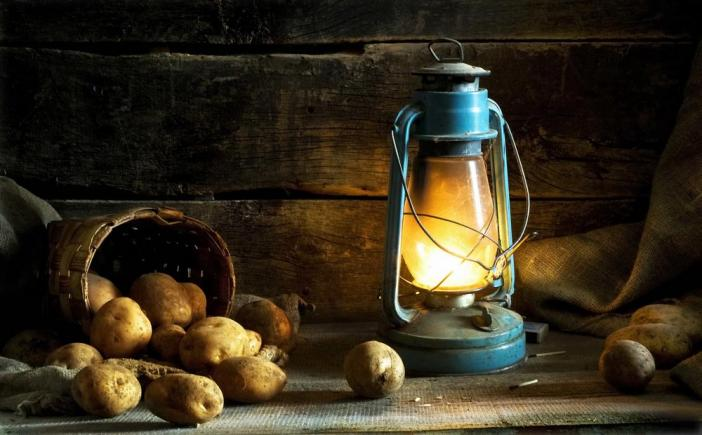
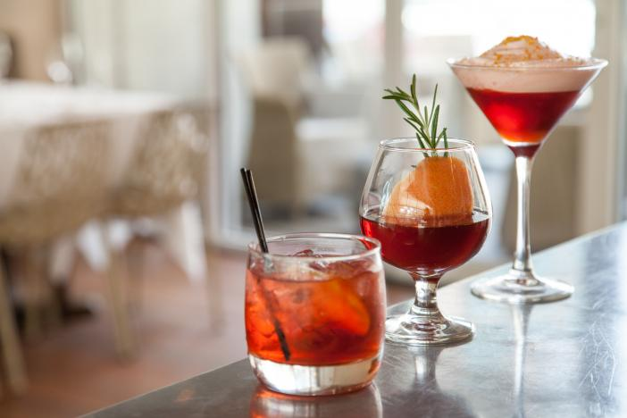

Натюрморт
Время выполнения: 2 часа
Задача: Снять художественный натюрморт из предметов, предоставленных организаторами. Минимум 3 предмета. Выбор места нахождения текстуры на усмотрение участника.При съёмке разрешается использовать только предметы, выданные экспертами. Съёмка в RAW.
Готовая работа: TIFF без слоёв, AdobeRGB, 300 dpi, не менее 20x30 см, 8 bit, соотношение сторон 2x3.
Введение
С самых истоков развития фотоискусства особую популярность всегда имела съемка натюрмортов, а все из-за того, что фотографируемые объекты статичны и неподвижны, и с ними можно экспериментировать, не ограничивая себя во времени и задумках — ведь первые камеры имели очень долгую выдержку, что осложняло задачу съемки динамичных сюжетов. Сегодня, спустя почти два века, искусство фотографии продолжает пополняться интересными кадрами со всевозможными предметами, расставленными определенным образом и с конкретной концепцией. Многие фотографы предпочитают именно этот жанр всем остальным, ведь работа в нем не знает границ.
 |
 |  |
Натюрмортная съемка помогает фотографу отточить профессиональные навыки в своем собственном темпе, в то же время сразу же появляется возможность создавать работы, которые можно будет впоследствии поместить в портфолио
Выбор объектива
Как и в любом другом жанре фотографии, крайне важно иметь объектив, подходящий для объекта съемки. Всем известно, что не существует универсального объектива. Но для фотографирования натюрмортов вам и не понадобится большой ассортимент линз.

Рекомендуется начать с 50 мм. Когда речь идет о фотосъемке натюрморта, объектив с фокусным расстоянием 50 мм считается широкоугольным объективом. Если вы снимаете только один или два объекта или если ваш объект просто маленького размера, чересчур большую часть снимка будет занимать поверхность, на которой он расположен, либо же задний план. Потребуется подойти очень близко к объекту, чтобы избавиться от всего лишнего в кадре.
Масштаб - это очень важный аспект съемки натюрморта. Некоторые объекты могут выглядеть шире или выше в видоискателе камеры. И большое количество фона, видимого на снимке, может просто затмить весь объект.Что вы фотографируете, полностью зависит от вас. Если оглянуться вокруг, можно найти множество интересных и увлекательных вещей, которые достойны кадра. Не следуйте стереотипам и не снимайте исключительно цветы и фрукты, возможных объектов съемки гораздо больше. Нестандартность мышления, приветствуется даже в самом стандартном жанре.
Освещение
Освещение для съемки натюрморта не обязательно должно быть дорогим. Если вы не можете себе позволить приобретение студийного осветительного оборудования, то сможете обойтись и подручными приборами. Помните, у вас есть полный контроль над съемкой, так что если вы хотите, найти помещение, в котором можете полностью избавиться от естественного света с помощью жалюзи или штор, вы сможете создавать оригинальные кадры с самостоятельно установленным искусственным светом. Если такой возможности у вас нет, создайте привлекательные фотографии с помощью натурального света.
Использовать стандартные лампы можно очень продуктивно, если знать как с ними работать. Обязательно попробуйте подсветить объект с разных сторон, вариант с прямым освещением не всегда удачен, а иногда, просто скучен. Если у вас есть яркий и красивый источник света из окна попробуйте фотографировать и с ними. Иногда приходится использовать отражатель, особенно при съемке с естественным светом. Если у вас нет отражателя, вы так же можете создать его своими силами, например, из фольги и картона.

Штатив и углы съемки
В зависимости от освещения, вам может понадобиться использовать штатив. Использование штатива плодотворно влияет на съемку натюрмортов, с их помощью вы можете наблюдать за сюжетом. Так же, он поможет вам использовать длинные выдержки, и при этом создавать красивые кадры.
Постарайтесь сделать так, что бы штатив ни ограничивал вас. Меняйте углы и точку зрения, не ленитесь лишний раз переставить, или перенастроить камеру и по-новому устанавливать её на штатив. Иначе, вы получите целую серию однотипных, даже скучных, кадров с небольшими изменениями сюжета.
Определяемся с выбором фона
Наличие красивого и удачного фона – это уже половина успеха натюрморта. Лучше всего, когда фон при съемке будет простым, красивым, таким, чтобы не отвлекал от предметов натюрморта. В качестве фона неплохо подойдут однотонно окрашенные стены или большой лист белой или цветной бумаги с простым узором, или вообще без него.
Подумайте о том, как фон контрастирует с предметом. Если вы не хотите снимать на фоне простого фона, то подумайте какой бы оттенок хорошо и гармонично смотрелся с вашим кадром и смог бы дополнить образ натюрморта. Для небольших объектов, вам не понадобится фон, как таковой, но вместо этого потребуется поверхность для размещения предметов. Тут, в качестве фона, хорошо будет смотреться черный бархат, или просто сплошная черная поверхность, которая хорошо поглощает свет.
Композиция натюрморта
Композиционный элемент вашей фотографии это важнейший компонент удачного снимка. Создавая композицию фотографии, учтите правило третей, подумайте, как их можно применить в вашем кадре, чтоб создать сильную композицию.

Что бы создать интересную и запоминающуюся фотографию очень важно мыслить нестандартно. Куда падает взгляд при просмотре кадра? Как вы используете пустое пространство в кадре? Как преподнести предмет зрителю, что бы он смотрелся максимально привлекательно и выигрышно? Ответив на эти вопросы, вы сможете создать хорошую композицию и удачно сфотографировать натюрморт.
Атмосфера и настроение
Как бы смешно это сейчас не звучало, но поверьте, на качество создаваемых фотографий влияет атмосфера и ваше настроение. Причем это правило работает не только при съемке натюрмортов. Когда вы расслаблены, сосредоточены и получаете удовольствие от процесса съемки, можете быть практически уверенны в успешности своих попыток. Фотографируя натюрморт, важно никуда не спешить.
В отличие от уличной и репортажной съемки, где состав кадра все время меняется и нужно вовремя успеть сделать кадр, натюрморт статичен. На создание одной фотографии натюрморта у вас может уйти столько времени, сколько вы пожелаете. Именно поэтому, следует уделять внимание мелочам и готовится к кадру столько, сколько потребуется. Установите освещение, объекты съемки и присмотритесь, что получается, если нужно, внесите коррективы и приступайте к фотосъемке.
При съемке натюрмортов, у вас не будет никаких оправданий нечетких и смазанных кадров. У вас есть неограниченное количество времени для того, что бы сфокусироваться. Для предметной фотосъемки вам отлично подойдет макро объектив, если такого вида оптики у вас нет, то можете просто попробовать снимать в макро режиме. В данном случае это может быть самый оптимальный вариант.
Вдохновение в классике
Создавая собственные натюрморты, думая об освещении, композиции и идеи, не забудьте обратиться за помощью и вдохновением к классикам жанра. Живописные натюрморты создаются уже на протяжении сотен лет. Возможно, вы найдете ответы на многие из своих вопросов в картинах художников Возрождения или современных фотографов.
Изучение картин поможет вам думать о форме, оттенках и цветах. Изучение различных решений приведет к созданию собственных неповторимых образов в фотографиях.